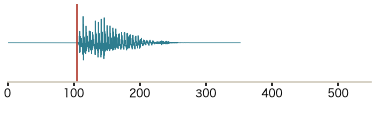
全長 352 ms ／ 立ち上がり 105 ms
横に並んだ4つを聴き比べ、その字だと確実に聞き取れるか・不自然でないかを判定してください。 とくに ぱ と ば、か と が、た と だ の清音・濁音の聞き分けに注目してください。
この比較は、これまで行ってきた独自の音声加工（声の高さの平坦化・1文字0.2秒への強制伸縮・ VOT の自動修正・文脈語からの切り出し・字ごとのフィルタ）をやめて、無加工のまま明瞭な音源で 実験できないかを確かめるためのものです。B1・B2 はいずれも合成器が出した音をそのまま使っており、 音量をそろえる倍率を話者ごとに1つだけ掛けた以外は何もしていません。フェード（音の出入りを なめらかにする処理）も掛けていません。再生もファイルをそのまま鳴らすだけで、切り出しはしません。
| 列 | 中身 | 話者 | 形式 |
|---|---|---|---|
| A | 人が実際に発音した自然録音 | 準備中 | — |
| B1 | 無加工の合成音 | 東北きりたん / ノーマル（speaker=108） | WAV 44.1kHz/16bit |
| B2 | 無加工の合成音 | 玄野武宏 / ノーマル（speaker=11） | WAV 44.1kHz/16bit |
| C | 現行の加工版 | 東北きりたん / ノーマル（speaker=108） | mp3（本番のコピー） |
B2 に玄野武宏を選んだ理由: 声の高さが約104Hzの男声で、きりたん(約229Hz)とほぼ1オクターブ違う。無加工の下見で、が・ば・だ のいずれにも prevoicing（破裂より前から声帯が震える。濁音と聞き取るいちばん強い手がかり）がはっきり出て、か・ぱ・た は日本語の無声破裂音として自然な +23〜+42ミリ秒に収まった。清音と濁音の VOT の開きは最小でも84ミリ秒で、試した7話者の中で最大。

全長 352 ms ／ 立ち上がり 105 ms
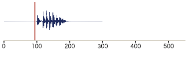
全長 299 ms ／ 立ち上がり 95 ms
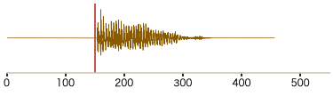
全長 456 ms ／ 立ち上がり 150 ms
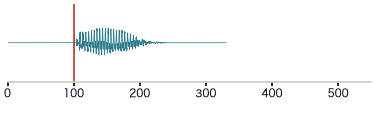
全長 331 ms ／ 立ち上がり 100 ms
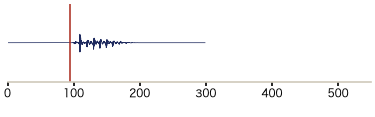
全長 299 ms ／ 立ち上がり 95 ms
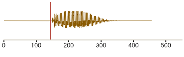
全長 456 ms ／ 立ち上がり 145 ms
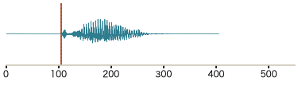
全長 405 ms ／ 立ち上がり 105 ms ／ VOT +42 ms
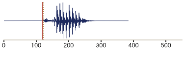
全長 384 ms ／ 立ち上がり 120 ms ／ VOT +42 ms
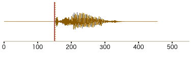
全長 456 ms ／ 立ち上がり 150 ms ／ VOT +50 ms
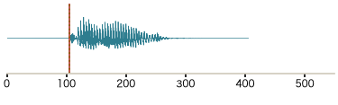
全長 405 ms ／ 立ち上がり 105 ms ／ VOT +20 ms
全長 363 ms ／ 立ち上がり 110 ms ／ VOT -42 ms
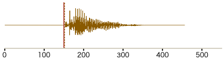
全長 456 ms ／ 立ち上がり 150 ms ／ VOT +36 ms
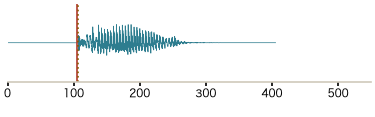
全長 405 ms ／ 立ち上がり 105 ms ／ VOT +11 ms
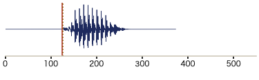
全長 373 ms ／ 立ち上がり 125 ms ／ VOT +24 ms
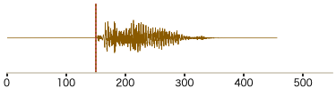
全長 456 ms ／ 立ち上がり 150 ms ／ VOT +49 ms
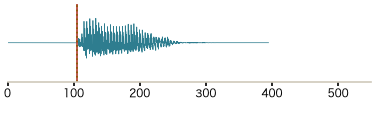
全長 395 ms ／ 立ち上がり 105 ms ／ VOT +7 ms
全長 373 ms ／ 立ち上がり 110 ms ／ VOT -62 ms
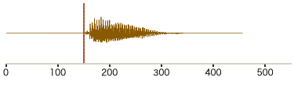
全長 456 ms ／ 立ち上がり 150 ms ／ VOT +11 ms
全長 395 ms ／ 立ち上がり 105 ms ／ VOT +8 ms
全長 363 ms ／ 立ち上がり 125 ms ／ VOT +22 ms
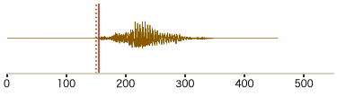
全長 456 ms ／ 立ち上がり 155 ms ／ VOT +46 ms
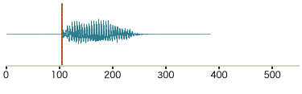
全長 384 ms ／ 立ち上がり 105 ms ／ VOT +10 ms
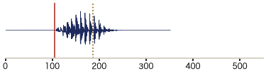
全長 352 ms ／ 立ち上がり 105 ms ／ VOT -62 ms
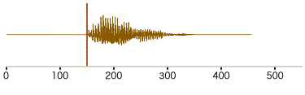
全長 456 ms ／ 立ち上がり 150 ms ／ VOT +9 ms
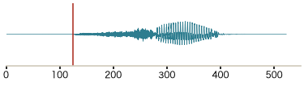
全長 523 ms ／ 立ち上がり 125 ms
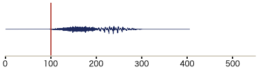
全長 405 ms ／ 立ち上がり 100 ms
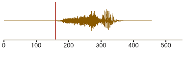
全長 456 ms ／ 立ち上がり 160 ms
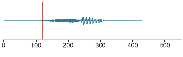
全長 427 ms ／ 立ち上がり 120 ms
全長 395 ms ／ 立ち上がり 100 ms
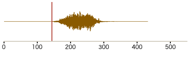
全長 432 ms ／ 立ち上がり 145 ms
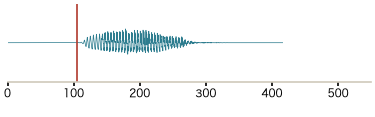
全長 416 ms ／ 立ち上がり 105 ms
全長 373 ms ／ 立ち上がり 100 ms
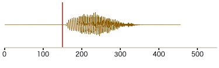
全長 456 ms ／ 立ち上がり 150 ms
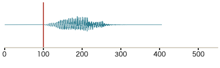
全長 405 ms ／ 立ち上がり 100 ms
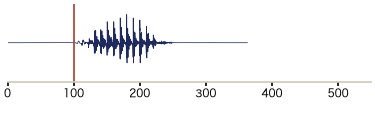
全長 363 ms ／ 立ち上がり 100 ms
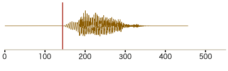
全長 456 ms ／ 立ち上がり 145 ms
| 言葉 | 意味 |
|---|---|
| 全長 | ファイル全体の長さ。前後の無音を含む。B1・B2 は合成器の既定で前後それぞれ約100ミリ秒の無音が入る |
| 立ち上がり | ファイルの先頭から数えて音が鳴りはじめる時刻 |
| VOT | 破裂の瞬間から声帯が震えはじめるまでの時間。マイナスは破裂より前から声が出ていたという意味で、濁音だと聞き取るいちばん強い手がかり。日本語では清音がおよそ +25〜+45 ミリ秒、濁音が 0 前後かマイナスになるのが自然 |
| C の全長がどれも同じ | 現行の加工版は1文字を0.2秒に強制的に伸縮しているため、全長が456ミリ秒前後にそろう。無加工の B1・B2 は字ごとに長さが違う。この違いそのものが「加工したか・しないか」の差 |
| し・す が小さく聞こえる | 話者ごとに倍率をひとつしか掛けていないので、字と字のあいだの音量差は合成器が出したまま。息の音が主体の字は母音を含む字より自然に小さい |
数値の一覧は project/音源比較_QC表.md。
音源は experiment/candidate_pools/raw_compare_v1/。
生成は experiment/tools/build_raw_compare.py、測定と本ページの生成は
experiment/tools/measure_raw_compare.py。